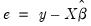
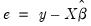
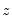
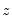

To display the correlograms and Q-statistics, push on the equation toolbar. In the dialog box, specify the number of lags you wish to use in computing the correlogram.
This view displays the autocorrelations and partial autocorrelations of the squared residuals up to any specified number of lags and computes the Ljung-Box Q-statistics for the corresponding lags. The correlograms of the squared residuals can be used to check autoregressive conditional heteroskedasticity (ARCH) in the residuals; see also
“ARCH LM Test”, below.
To display the correlograms and Q-statistics of the squared residuals, push on the equation toolbar. In the dialog box that opens, specify the number of lags over which to compute the correlograms.
To display the histogram and Jarque-Bera statistic, select. The Jarque-Bera statistic has a

distribution with two degrees of freedom under the null hypothesis of normally distributed errors.
This test is an alternative to the Q-statistics for testing serial correlation. The test belongs to the class of asymptotic (large sample) tests known as Lagrange multiplier (LM) tests.
This is a regression of the residuals on the original regressors  and lagged residuals up to order
and lagged residuals up to order  . EViews reports two test statistics from this test regression. The F
. EViews reports two test statistics from this test regression. The F-statistic is an omitted variable test for the joint significance of all lagged residuals. Because the omitted variables are residuals and not independent variables, the exact finite sample distribution of the
F-statistic under

is still not known, but we present the
F-statistic for comparison purposes.
To carry out the test, push on the equation toolbar and specify the highest order of the AR or MA process that might describe the serial correlation. If the test indicates serial correlation in the residuals, LS standard errors are invalid and should not be used for inference.
where  is the residual. This is a regression of the squared residuals on a constant and lagged squared residuals up to order
is the residual. This is a regression of the squared residuals on a constant and lagged squared residuals up to order  . EViews reports two test statistics from this test regression. The F
. EViews reports two test statistics from this test regression. The F-statistic is an omitted variable test for the joint significance of all lagged squared residuals. The Obs*R-squared statistic is Engle’s LM test statistic, computed as the number of observations times the

from the test regression. The exact finite sample distribution of the
F-statistic under

is not known, but the LM test statistic is asymptotically distributed as a

under quite general conditions.
Prior to EViews 6, White tests always included the level values of the regressors (i.e. the cross product of the regressors and a constant) whether the original regression included a constant term. This is no longer the case—level values are only included if the original regression included a constant.
EViews reports three test statistics from the test regression. The F-statistic is a redundant variable test for the joint significance of all cross products, excluding the constant. It is presented for comparison purposes.
The Obs*R-squared statistic is White’s test statistic, computed as the number of observations times the centered  from the test regression. The exact finite sample distribution of the F
from the test regression. The exact finite sample distribution of the F-statistic under

is not known, but White’s test statistic is asymptotically distributed as a

with degrees of freedom equal to the number of slope coefficients (excluding the constant) in the test regression.
You may choose which type of test to perform by clicking on the name in the box. The remainder of the dialog will change, allowing you to specify various options for the selected test.
The BPG, Harvey and Glejser tests allow you to specify which variables to use in the auxiliary regression. Note that you may choose to add all of the variables used in the original equation by pressing the button. If the original equation was non-linear this button will add the coefficient gradients from that equation. Individual gradients can be added by using the
@grad keyword to add the
i-th gradient (
e.g., “@grad(2)”).
The White test lets you choose whether to include cross terms or no cross terms using the checkbox. The cross terms version of the test is the original version of White's test that includes all of the cross product terms. However, the number of cross-product terms increases with the square of the number of right-hand side variables in the regression; with large numbers of regressors, it may not be practical to include all of these terms. The no cross terms specification runs the test regression using only squares of the regressors.
The lets you combine or specify in greater detail the various tests. The following example, using EQ1 from the “Basics.WF1” workfile, shows how to use the Custom Wizard. The equation has the following specification:
Once you have chosen a dependent variable, click on . Step two of the wizard lets you decide whether to include a White specification. If you check the checkbox and click on Next, EViews will display the page which lets you specify options for the test. If you do not elect to include a White specification and click on , EViews will skip the page, and continue on to the next section of the wizard.
You may choose to include cross terms or not, whether to run an EViews 5 compatible test (as noted above, the auxiliary regression run by EViews differs slightly in Version 6 and later when there is no constant in the original equation), or, by choosing , whether to include a set of variables not identical to those used in the original equation. The custom test allows you to perform a test where you include the squares and cross products of an arbitrary set of regressors. Note if you when you provide a set of variables that differs from those in the original equation, the test is no longer a White test, but could still be a valid test for heteroskedasticity. For our example we choose to include C and LOG(IP) as regressors, and choose to use cross terms.
Click on to continue to the next section of the wizard. EViews prompts you for whether you wish to add any other variables as part of a Harvey (Breusch-Pagan-Godfrey/Harvey/Glejser) specification. If you elect to do so, EViews will display a dialog prompting you to add additional regressors. Note that if you have already included a White specification and your original equation had a constant term, your auxiliary regression will already include level values of the original equation regressors (since the cross-product of the constant term and those regressors is their level values). In our example we choose to add the variable Y to the auxiliary regression:


to give an LM statistic, which follows a
-distribution with degrees of freedom equal to the number of variables in
under the null hypothesis of no heteroskedasticity. Koenker (1981) suggested that a more easily computed statistic of Obs*R-squared (where
is from the auxiliary regression) be used. Koenker's statistic is also distributed as a
with degrees of freedom equal to the number of variables in
. Along with these two statistics, EViews also quotes an F-statistic for a redundant variable test for the joint significance of the variables in
in the auxiliary regression.
The ARCH test is a Lagrange multiplier (LM) test for autoregressive conditional heteroskedasticity (ARCH) in the residuals (Engle 1982). This particular heteroskedasticity specification was motivated by the observation that in many financial time series, the magnitude of residuals appeared to be related to the magnitude of recent residuals. ARCH in itself does not invalidate standard LS inference. However, ignoring ARCH effects may result in loss of efficiency; see “ARCH and GARCH Estimation” for a discussion of estimation of ARCH models in EViews.
 , where
, where  is a pre-specified integer. The local alternative is ARMA(
is a pre-specified integer. The local alternative is ARMA( ) errors, where the number of lag terms
) errors, where the number of lag terms  =max(
=max( ). Note that this alternative includes both AR(
). Note that this alternative includes both AR( ) and MA(
) and MA( ) error processes, so that the test may have power against a variety of alternative autocorrelation structures. See Godfrey (1988), for further discussion.
) error processes, so that the test may have power against a variety of alternative autocorrelation structures. See Godfrey (1988), for further discussion. are the estimated coefficients and
are the estimated coefficients and  are the errors. The test statistic for lag order
are the errors. The test statistic for lag order  is based on the auxiliary regression for the residuals :
is based on the auxiliary regression for the residuals : from the test regression. Under quite general conditions, the LM test statistic is asymptotically distributed as a .
from the test regression. Under quite general conditions, the LM test statistic is asymptotically distributed as a . is a vector of independent variables. Usually this vector contains the regressors from the original least squares regression, but it is not necessary.
is a vector of independent variables. Usually this vector contains the regressors from the original least squares regression, but it is not necessary.  is a vector of independent variables.
is a vector of independent variables. is performed. The LM statistic is then the explained sum of squares from the auxiliary regression divided by , the derivative of the log gamma function evaluated at 0.5. This statistic is distributed as a
is performed. The LM statistic is then the explained sum of squares from the auxiliary regression divided by , the derivative of the log gamma function evaluated at 0.5. This statistic is distributed as a  with degrees of freedom equal to the number of variables in
with degrees of freedom equal to the number of variables in  . EViews also quotes the Obs*R-squared statistic, and the redundant variable
. EViews also quotes the Obs*R-squared statistic, and the redundant variable  . An LM statistic can be formed by dividing the explained sum of squares from this auxiliary regression by . As with the previous tests, this statistic is distributed from a chi-squared distribution with degrees of freedom equal to the number of variables in . EViews also quotes the Obs*R-squared statistic, and the redundant variable
. An LM statistic can be formed by dividing the explained sum of squares from this auxiliary regression by . As with the previous tests, this statistic is distributed from a chi-squared distribution with degrees of freedom equal to the number of variables in . EViews also quotes the Obs*R-squared statistic, and the redundant variable  in the residuals, we run the regression:
in the residuals, we run the regression: are the estimated parameters and the residual. The test statistic is then based on the auxiliary regression:
are the estimated parameters and the residual. The test statistic is then based on the auxiliary regression: